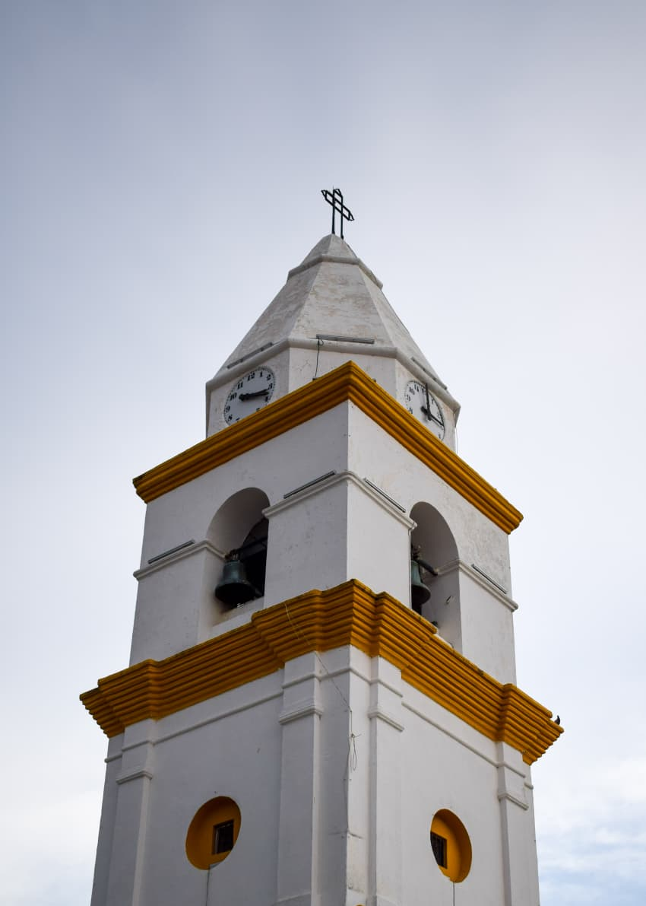

Revista Digital
Turismo comunitario en Valledupar
"El corazón del Cesar late en sus historias."
"Nuin" · Agua, vida, río

Un recorrido por las voces del territorio vallenato. La comunidad arhuaca, los pescadores del río Guatapurí, los juglares del acordeón y los sabores de la cultura local se encuentran en cada página.
EXPLORAR REVISTAValledupar es mucho más que la cuna del vallenato. Es un territorio donde los pueblos arhuacos, koguis, wiwas y kankuamos, junto a los campesinos de la Sierra Nevada y los habitantes del río Guatapurí, tejen una red de saberes ancestrales. El turismo comunitario aquí significa caminar con ellos, escuchar sus historias y ser parte de un legado que trasciende generaciones.
"La Sierra Nevada no es una montaña, es un corazón que late con las voces de sus guardianes."— Saber ancestral arhuaco
El alma de Valledupar, donde la comunidad se reúne y comparte sus tradiciones.
Habitantes ancestrales de la Sierra Nevada, guardianes del territorio y su cosmovisión.
El acordeón, la caja y la guacharaca cuentan historias de amor, paisajes y resistencia cultural.
La montaña sagrada que abraza el territorio, hogar de los pueblos indígenas de la región.